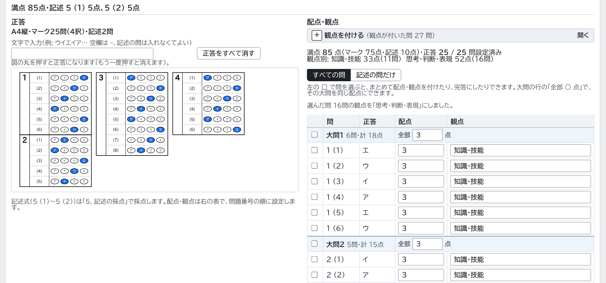

使う前に（大事）
- 対象: 学校の先生（おもに中学校）。
- 学校で使うときは、先に管理職・情報担当の先生に確かめてください（名簿や成績を扱うため）。
- 名簿・答案・点数は、開いたパソコンのブラウザの中だけに保存します。インターネットには送りません。読み取りもパソコンの中でします。
- 別のパソコンで続けるときや控えを取るときは、アプリの「ファイルに保存」を使ってください。
- 共用のパソコンでは、使い終わったら「その他 ▾」→「このパソコンからデータを全部消す」を押してください。
- 読み取り・採点の結果や観点別の評価は、先生が確かめて決めてください。
- このアプリは無保証です。使って起きた損害について、作成者は責任を負いません。
使い方の動画
場面ごとの短い動画です（字幕つき・音は BGM だけ）。
説明書（PDF）
- はじめの1枚 採点の日の流れ（A4 1枚）。印刷して手元に。
- 困ったときのQ&A アプリの「困ったときは」でも同じ内容を探せます。
- 解答用紙の作り方 いまの問題用紙に合わせた解答用紙の作り方（A4 1枚）。
- 主任・情報担当用 名簿の設定と配り方
できること
- 用紙を作る: 大問・小問の表の形のマークシート（横書き・国語の縦書き・一問一答・両面）を作って印刷
- 読み取る: スキャナでPDFにした答案をまとめて読み取り。あやしい所は「要確認」で知らせます
- 採点する: 正答・配点・観点、完答・順不同、記述問題の採点
- まとめる: 採点表（CSV）、返却用の採点済み答案、得点分布・S-P表などの分析

インターネットが使えないパソコンでは
アプリ・説明書・練習用のデモをまとめた ZIP を落として使えます。
- 落としたZIPを右クリック →「すべて展開」で取り出します。（ZIPの中から直接開くと、うまく保存されません）
- フォルダをドキュメントなど決まった場所に置き、「電子採点システム君.html」をダブルクリックします。
このページから開いたアプリと、ZIP のアプリとでは、保存したデータは共有されません。移すときは「ファイルに保存」→「ファイルから読み込む」を使ってください。
不具合・ご意見
受付のフォームから送ってください。生徒の名前や答案の画像は送らないでください。
作成者・ライセンス
作成者・著作権者: 技術科 岡田（© 2026）
ライセンス: CC BY-NC-SA 4.0（表示・非営利・継承）
作成者を表示し、お金を取らずに使うなら、コピーして配ったり直して使ったりできます。直したものを配るときも同じライセンスにしてください。アプリに含まれる pdf.js は Apache License 2.0 です。